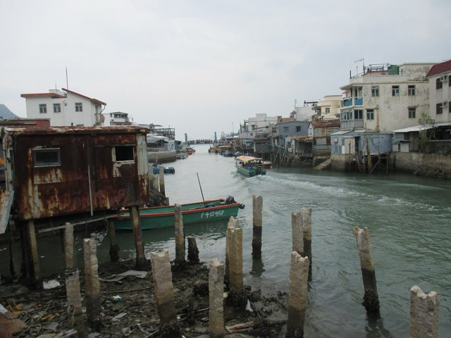
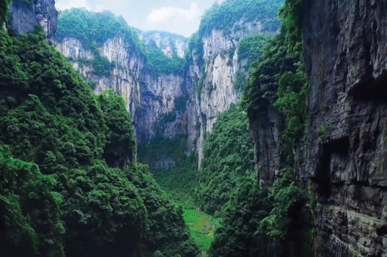
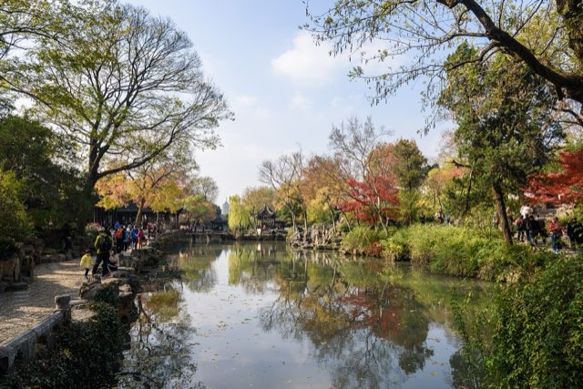
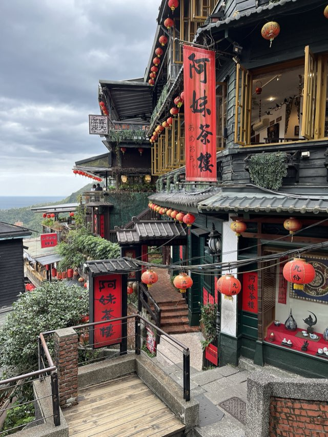

Temple Street first
Use Temple Street for food, neon and local atmosphere; choose Apliu or Ladies’ Market only when shopping is the point.
Hong Kong first. A conditional Shenzhen day trip. Then Chongqing, Shanghai and Taipei—with Thanksgiving dinner at Jen’s family’s table.
Route set · booking research current August 4, 2026


Shenzhen is not a hotel stop. If the five-day Shenzhen Special Economic Zone port visa is issued, it is one same-day outing from Hong Kong through an eligible VOA crossing. Current approval for U.S. passports is inconsistent and not guaranteed; if it is refused or the issuing port cannot confirm eligibility, the trip continues unchanged in Hong Kong.
Booked-flight date correction: United UA 869 arrives in Hong Kong at 7:20 p.m. on November 13. The published plan now starts that night, with four Hong Kong hotel nights (Nov 13–17) before the direct Chongqing flight.
Hong Kong → Chongqing → Shanghai → Taipei
Sixteen hotel nights, with no stay shorter than three nights. Transfer days have deliberately light evenings.
Choose by city and night, don’t pre-book every market. Food markets and local shopping now sit beside each city’s hotel context. The quick index below points to the best fit for handmade gifts, tea, teapots and local craft.
Use Temple Street for food, neon and local atmosphere; choose Apliu or Ladies’ Market only when shopping is the point.
Bayi is the easy snack crawl from the hotel. Guanyinqiao and Nine Street are the larger nightlife trip.
Wujiang Road is the easiest; Daxue Road is younger and farther; Yuyuan is the traditional-atmosphere option.
Raohe is the first-night choice, Ningxia the best food crawl, and Wanhua/Nanjichang the better crowd fit than Shilin.
Use V Mart for handmade stalls and Sham Shui Po for the real textile-and-craft-market experience.
Start with Shancheng Alley or early Ciqikou; use the Three Gorges Museum shop for a more dependable city-specific gift.
The strongest local-style market for comparing tea, teapots, gaiwan and tea accessories.
Tea and bag materials in Dihua/Yongle; handmade ceramics and teapots in Yingge.
Live fare snapshot · August 4, 2026: Google Flights quotes include required taxes and fees for one adult; optional bag and seat charges may apply. The carrier-direct choices below are the safest booking targets, and fares can move.
Book Southwest nonstop. 10:35 a.m. → 12:30 p.m., 3h55. It was $119 with one carry-on included; the first checked bag was quoted at $45. United also showed a $119 nonstop at 9:00 a.m.
United UA 869 is booked. Departs San Francisco at 11:45 a.m. on Nov 12 and lands in Hong Kong at 7:20 p.m. on Nov 13. The hotel plan now starts on arrival.
Best overall: Cathay nonstop. 1:25 p.m. → 4:05 p.m., $272 direct with one carry-on and first checked bag free. Hong Kong Airlines showed a late $157 agency quote, but its own booking flow did not return a usable fare.
Book Spring to Hongqiao. 12:30 p.m. → 3:00 p.m., $98 on Google Flights; Spring’s own page showed about $96.80. One carry-on is included; checked baggage costs extra.
Best convenience: China Airlines nonstop. 4:15 p.m. → 6:20 p.m., $203 direct; Hongqiao and Songshan minimize ground transfers. EVA was $198 but departed at 7:40 p.m.
Book STARLUX/American via Phoenix. 8:45 p.m. → 11:54 p.m., 17h09, $642. STARLUX confirmed TWD 20,801; one carry-on is included and the first checked bag costs extra. Clear U.S. immigration at Phoenix.
At Chongqing immigration, carry the confirmed Shanghai → Taipei ticket. If a schedule change moves that flight beyond the 240-hour window, fix it before departure.
Choose the base that makes evenings easy, not just the room. The dated links below use the current itinerary dates; displayed dollar figures are planning snapshots, not guarantees. Re-open each link to confirm the total, room type, taxes, cancellation terms and any renovation or availability changes. The three new non-Hong-Kong “Target” cards are alternates to reprice before booking.
Our two Hong Kong choices: The Mira for full-service comfort and The Salisbury for value, harbour access and the easiest sightseeing position.
Why these bases fit us: We are optimizing for a group that wants to step outside into food and evening energy, keep transfers short, and avoid spending every night in taxis. Each city base is close to the main experience while still giving us a practical airport or intercity departure.
These neighborhoods put dinner, markets, bars, harbour walks and MTR stations close to the hotel. Central/SoHo is best for the Peak and old-town days; Jordan and Tsim Sha Tsui make Temple Street, West Kowloon, the Star Ferry and Kowloon food easy; Wan Chai adds trams and local restaurant energy.
Jiefangbei/Yuzhong keeps the first hotpot, Liberation Monument, Shibati and Hongya Cave in the same central orbit, while Chaotianmen adds the river, cableway and Raffles City. In a steep, traffic-heavy city, a central base saves more time and energy than a quieter river-view address.
Xintiandi gives us restored Shikumen lanes, restaurants, cafés and nightlife immediately outside the hotel, plus Metro Lines 10 and 13. It is central for the Bund, Old City and French Concession without trapping the group in a generic business district or a purely tourist waterfront.
Da’an gives us neighborhood restaurants, Yongkang Street, Da’an Park and straightforward MRT access to Xinyi, museums and the family Thanksgiving plan. It feels lived-in rather than resort-like, which makes it a calmer final base while keeping lively food close.
The strongest full-service fit for our priorities: a lively Tsim Sha Tsui doorstep, immediate transit and shopping/dining at Mira Place, plus a pool and spa. Choose it when the dated rate stays under the cap.
The best-value alternative to The Mira: a genuinely central harbour base with more full-service amenities than its price usually suggests. Choose it when the dated Mira rate exceeds $250 or when the easiest sightseeing position matters most.
The aggressive budget option with a proven central address and 259 reviews. Rooms are simpler and smaller; choose it when location matters far more than international-hotel polish.
The easiest base for this short stay: reliable full-service comfort, huge 452 ft² rooms and a downhill walk toward Hongya Cave. Use the metro back when Chongqing’s elevation wins.
The premium is for space, kitchen and laundry inside the landmark complex. Better than the riverfront Regent when walkability is non-negotiable, though Jiefangbei sits uphill.
The strongest new fit when apartment convenience matters: spacious studios through three-bedroom units, full kitchens, washer/dryers, a restaurant and an indoor pool. Choose it over a riverfront hotel if evenings on foot matter more than a skyline view.
My first luxury upgrade to price: a genuine five-star hotel in the lively Yuzhong core, with indoor pools, spa service and a much easier evening doorstep than the riverfront high-rises. It is the best compromise between polish, location and the $100–$200 target.
The most distinctive room upgrade if a large river view and quiet, East-inspired design matter more than being in the middle of the food streets. Regent has 60-square-meter river-view rooms and a Michelin Key; treat it as a deliberate retreat, not the default base.
A genuinely cool, high-floor option: rooms and public spaces sit above the IFS tower with panoramic mountain, river and skyline views. Choose it for the “we are in Chongqing” feeling, while accepting that the best nightlife is across the river.
The most unique hotel in the set: a Raffles City tower address, Crystal sky terrace, 43rd-floor pool and big confluence views. It is not my default under-$200 recommendation, but it is the “make the hotel part of the trip” option.
The clean location-first value play: dramatically cheaper than the international brands without giving up the neighborhood or metro. Service will be more locally oriented.
The best polished fit when the dated rate stays under $250: younger design, international service, nearby restaurants and easy access to two metro lines in the same excellent neighborhood.
The practical budget fallback if Xintiandi rates jump. It is excellent for landmark access and metro convenience, but the immediate evening atmosphere is more tourist-central and less neighborhood-rich than Xintiandi.
The strongest group setup when two real beds and polished service justify going over the $250 target. Keep it as the twin-bed splurge, not the default booking.
The value choice for park access, Yongkang Street food and a direct MRT ride across the city. Traditional rooms, but the neighborhood works extremely well.
The calmest option in the preferred base: breakfast, a boutique feel and easy access to food. Choose it when you want a quieter return at night rather than the liveliest possible doorstep.
The best logistics choice under the target: two proper beds, Japanese-style polish, nearby Zhongxiao East Road dining and the MRT literally at the hotel entrance.
The most direct match for a lively doorstep and boutique atmosphere. Keep it as the premium alternate; if the rate rises over the cap, Mitsui and Rido are the better-value choices.
Everything for each stop now lives together. Open a city for its stay, priorities, restaurants, markets, shopping, events, nature, recovery and optional escapes. All city chapters start collapsed so the whole trip remains easy to scan.
Kadoorie Farm is the best serious nature day, Wetland Park the wildlife-focused option, and HKZBG the easy central add-on. Mai Po is for committed birding.
Nanshan Botanical Garden is the better low-crowd hike-and-garden fit; Chongqing Zoo is the priority if seeing pandas matters more than the robot demonstration.
Use Shanghai Botanical for a practical half-day, Chenshan for a serious full garden day, and Natural History Museum when weather or energy turns against another outdoor block.
Yangmingshan gives us the best independent nature day if the forecast is clear; Taipei Botanical Garden is the easy city option and Taipei Zoo is the conventional animal day.
Pair the National Palace Museum with Grand View’s natural white-sulfur baths on Nov 27. It is the most dependable, polished option that adds a real hot spring without consuming a separate sightseeing day.
Hong Kong and Shenzhen have polished hotel day spas; Chongqing and Shanghai add mineral or geothermal-water options. Keep all four as weather or energy fallbacks rather than collecting spa visits.

The landing pad and the food capital: harbour, hills, dense neighborhoods and enough time to absorb the flight.
Walk to T’ang Court; allow roughly 20–30 minutes by MTR or taxi to Central for The Chairman, Wing and Yat Lok.
Ingredient-led Cantonese and the trip’s most competitive reservation. Build one Hong Kong day around it only if the official release succeeds.
A creative Chinese tasting-menu alternative to The Chairman, in the same Central building. Choose one of the two rather than booking both major splurges.
The easiest luxury fallback from The Mira or Salisbury: serious Cantonese cooking without spending the evening crossing the harbour.
An intimate, relaxed room with French-leaning cooking and large sharing plates. It is worth the Central trip, but sits at the far edge of our 20–30-minute target.
Tiny Central roast-meat institution; no ceremony, fast turnover and one of the clearest “you are in Hong Kong” lunches.
One-star yakitori with whole-bird grilling, whisky and group energy. More fun than another formal Cantonese room.
Temple Street is the best food-and-atmosphere choice from The Mira or Salisbury. Mong Kok and Sham Shui Po are shopping-oriented alternatives.
Temple Street is the best all-around fit for food, neon, local atmosphere and an easy evening from our hotel base.
True night-market atmosphere: dai pai dongs, street food, souvenir stalls, fortune tellers and occasional Cantonese opera. Go later if you want the street a little less packed.
Sham Shui Po electronics, vintage finds and secondhand curiosities. It is more of a flea market than a food market; Sunday is the best fit because weekend hours run later.
A lively Mong Kok bargain street for clothing, accessories and souvenirs. Choose this over Apliu only if shopping is the goal.
Hong Kong has no compelling natural spring, so favor a polished spa beside the hotel and attractions.
The Mira’s official day pass includes its indoor infinity pool, whirlpool, sauna, steam, aromatherapy shower and heated-waterbed lounge; treatments use the nine-room spa. It is directly in the preferred Tsim Sha Tsui hotel base.
Choose Windsor only if the group wants sauna, bathing and massage after Temple Street. Current listings run until 5:30 a.m., but it uses ordinary heated water and is less polished than MiraSpa.
These are the better local-market choices for a bag, craft gift or small tea object. Quality varies, so compare stalls before spending on anything described as antique or handmade.
A recurring bazaar with roughly 30 stalls, handmade crafts, small gifts and food. The current listing runs weekends and public holidays through Nov 29, 2026, so it fits our Hong Kong dates unusually well.
Street stalls and small shops for fabric, buttons, zippers, leather goods, tools and craft supplies. It feels much more local than a souvenir strip and is the best place to find textile inspiration for a handmade bag.
Browse Chinese ceramics, jade, vintage Hong Kong objects and curios. It is a fun market walk with real atmosphere, but modern replicas and questionable “antique” claims are part of the mix.
These are deliberately different: a serious conservation day, a wildlife wetland, or an easy central garden. They are better fits for us than waiting in lines at a conventional attraction.
A conservation and education centre with hillside paths, gardens and wildlife habitats. The 9:30 a.m.–5 p.m. window makes it a full commitment, but it is the strongest Hong Kong choice for quiet walking and plants.
Mangroves, fishponds, boardwalks and birding make this the best wildlife-focused option without a theme-park feel. It is open 10 a.m.–5 p.m. most days, but closed Tuesdays; go quietly and watch the tide.
The low-friction choice: a free, historic garden with aviaries, greenhouse space and mammals on the edge of Central. It is not a wilderness day, but it gives us plants and animals without sacrificing a city afternoon.
If the VOA is issued, give the day one clear theme: see the young megacity’s hardware markets, transformation story and skyline. The train is short; the border process is the variable.
Target: Sunday, Nov 15. Directly reconfirm an issuing port’s hours and U.S. eligibility the week of travel.
Shenzhen is the broader robotics watchlist: the Galaxy WORLD/Bantian robot 6S store and public interactive halls are more plausible than chasing a single viral dance clip. They are far from the compact Futian loop, so choose this instead of another distant attraction.
Opening coverage described a multi-brand robot store and public demonstrations, including Unitree, but that is not proof of a daily November performance. Treat this as an add-on for people who specifically want robotics—not a reason to risk the Shenzhen day trip.
The border is already the schedule risk, so any spa should replace sightseeing rather than join it.
Hyatt’s treatment spa sits in Luohu beside MixC and minutes from the border, with private steam-equipped suites among its facilities. This is the stronger conventional day-spa experience.
The established Luohu complex combines bathing, sauna, massage, food and rest floors. It is more culturally distinctive than a hotel treatment room, but it is not a natural hot spring.

Three dimensions, two rivers and one intentionally spicy dinner. The city itself is the attraction.
This is the robot experience worth building into the itinerary. It is outside central Jiefangbei, so make it a deliberate half-day rather than an extra stop between city viewpoints.
The center’s public reports show more than static displays: a July visitor report documented a Unitree robot dance display, while an on-site March report described staff-operated Unitree performance and interaction. The evidence supports going, but it does not guarantee a particular model or show time in November.
Peijie, Chen Pangzi and Yang Ji Long Fu are the local priorities. Chen Pangzi, the Guanyinqiao sweets and the river-view grill all came from a Chongqing-resident friend’s own list. The formal Jiefangbei cluster is a nearby wildcard; it should not replace the city’s hotpot and Jianghu cooking.
Central, high-energy and easier to navigate than a distant neighborhood room. Use Dianping/Amap to confirm the current branch.
The best local addition: spicy Jianghu cooking that gives us a proper Chongqing meal beyond hotpot, within walking distance of the base.
Palace-style Chinese cuisine in the Jiefangbei restaurant cluster. Choose it for a ceremonial dinner, not as a substitute for local hotpot.
A serious seasonal Japanese option near the hotel if the group wants one international tasting meal during the short Chongqing stay.
A three-hour Spanish tasting menu in the same central cluster. It is a fun special occasion option, but local food should win the other nights.
The hotpot our Chongqing friend named first, and it holds up: a plain second-floor local room on Hanwei Road, two stops from Jiefangbei on Line 1 or 10 to Qixinggang, exit 4C, then about 100m. A market-style 老火锅, not a tourist brand.
Both of her dessert-and-drink picks sit in Guanyinqiao, so they fold into the Nov 19 night with no extra transit. Yuan Ma is a cheap two-shop local institution; Li Ruotao 李若桃 opened its first store on the same pedestrian street and makes sticky-rice yogurt shakes to order.
Her “old man’s barbecue with the river view” most likely means this hillside grill above Shangxinjie—Line 6, or the cableway’s south station, then a steep ten-minute climb. Open deck facing the confluence, Hongya Cave and Dongshuimen Bridge, around ¥125 a head.
The city’s daily ritual is a better food memory than chasing three hotpot brands. Try a different busy noodle counter each morning.
These are food-and-nightlife districts rather than Taipei-style markets. Bayi is easiest from the hotel; Guanyinqiao is the bigger local-young-night option.
Use the nearby option on arrival night, then decide whether the larger Guanyinqiao trip is worth the transfer.
Central Jiefangbei snack crawl for suanlafen, grilled foods, ice jelly and other Chongqing specialties. Current listings show roughly 8 a.m.–11 p.m.; individual stalls vary.
A huge, lively food street with hundreds of food businesses. Expect crowds at dinner and allow extra transit time from Jiefangbei. Yuan Ma red bean soup 袁妈红豆汤 and Li Ruotao 李若桃 yogurt shakes are both here, so save room for our friend’s dessert picks.
Not a traditional market, but the best add-on for bars, live music and younger nightlife around Guanyinqiao.
Added from a Chongqing-resident friend’s own itinerary. The composed skyline photograph is taken from the far bank, not from inside the landmark, and the cableway is the way to get there.
Zhonglou Square 钟楼广场 is the spot that gets Raffles, Hongya Cave, Qiansimen Bridge and the Grand Theatre into a single frame. Longmenhao Old Street 龙门浩老街 sits under Dongshuimen Bridge—walk to its far end and drop down to the riverside path for the widest view of the Yuzhong peninsula.
The 两江游 night cruise is a 45-minute loop around the peninsula, sailing roughly 19:30–22:00 from Chaotianmen Pier 7 or the Hongya Cave dock. The 两江小渡 mini-ferry runs an evening loop out of Danzishi at 19:30 for a tenth of the price, and a ¥15 daytime crossing between Hongya Cave and Danzishi.
Yunduan Zhi Yan 云端之眼 is an open-air rooftop deck on the 69th floor of Union International, around ¥68 and open late. WFC’s Hui Xian Lou 会仙楼 is higher at floors 73–75, around ¥118, with the 75th fully open to the air.
Once overnight hours stop being a requirement, Chongqing’s genuine mineral water becomes the reason to go.
Official district information documents the hot-water outlet and more than ten natural minerals, with open-air pools, indoor relaxation, spa facilities and food.
The Jiulongpo complex offers hot pools, saunas, rest capsules, fruit and late-night food on 8- or 24-hour passes. Its water is not verified as natural spring water.
Chongqing is the weakest stop for a premium handmade bag or serious teapot. Use these for city-specific craft, tea-house atmosphere and small gifts, then save the major teapot purchase for Taipei or Shanghai. If only one outer district fits the three nights, Huangjueping’s working teahouse is the better version of what we would go to Ciqikou for.
Traditional products, tea houses, craft demonstrations and old-town lanes make this the obvious market-style stop. Later in the day it becomes shoulder-to-shoulder retail, so leave when the main street fills.
A 1.25km run of painted facades from a 2007 art-school project. Be honest about it: the original paint is faded and the vivid work is 2025-vintage repainting, with one zone left open for visitors to paint themselves. The real draw is Jiaotong Teahouse 交通茶馆, a 1960s transport-company canteen still pouring ¥10 lidded-bowl tea for card-playing regulars, 7 a.m.–7 p.m.—the most un-renovated old-Chongqing room left in the city.
Look for local creative shops and occasional non-heritage markets featuring Rongchang summer cloth, Rongchang pottery, embroidery and other Chongqing craft. The November vendor lineup is not guaranteed, so check locally closer to the day.
This is not a street market, but it is the safer source for distinctive Chongqing and Three Gorges gifts. The museum network has developed hundreds of cultural-creative products beyond standard hotpot souvenirs.
Chongqing’s best nature choices are not interchangeable. Nanshan gives us gardens, elevation and a slower view day; the zoo is for pandas and conservation; Jinfo Mountain is a separate full-day commitment.
A large hillside garden with rose, camellia, orchid, bonsai, plum and greenhouse sections, plus the city’s best “green above the grid” feeling. November’s cooler air and autumn plantings make this the low-crowd choice.
The serious animal option: pandas, golden snub-nosed monkeys, elephants and a large, hilly conservation park. Go right at opening if pandas are a must; this will be more popular and less improvisational than Nanshan.
A UNESCO World Natural Heritage mountain with much bigger biodiversity and open-air scenery than the city gardens. It is beautiful, but the travel and weather risk make it an optional replacement day—not a casual add-on to three Chongqing nights.

The longest mainland stay earns a rhythm: old lanes, world-class museums, skyline theatre and one slow day.
These are two different stops, not one compact route: the Unitree Embodied AI Experience Store is central at Jiuguang Department Store, while the Shanghai Science & Technology Museum is the deeper science backup in Pudong.
Use Saturday, Nov 21 around 11:15 a.m. as the preferred store attempt; recent Chinese coverage and opening footage show public interaction and dancing, but there is no official fixed daily performance timetable. If that does not work, try Sunday morning instead.
T’ang Court is the walkable anchor. Allow roughly 20–30 minutes by taxi or metro to the Bund restaurants; Fu He Hui and Taian Table are deliberate exceptions.
The strongest Shanghai discovery: modern Fujianese cooking, serious seafood and a destination meal near the Bund.
An eight-course contemporary Chinese journey near the Bund, close enough from Xintiandi to justify the taxi for a major foodie night.
The easiest top-tier Shanghai dinner: two-star Cantonese cooking inside Xintiandi, directly aligned with our hotel base and evening walkability.
A serious seasonal vegetarian tasting menu for a genuinely different experience. It is roughly 25–30 minutes from Xintiandi when traffic cooperates.
A counter-style, frequently changing tasting menu and Shanghai’s highest Michelin distinction. Expect the trip beyond the strict 30-minute target.
Founded in 1862 and ideal for traditional Shanghainese flavors when we want history and local character instead of a modern tasting menu.
Sophisticated Shanghainese food in a preserved 1920s townhouse. This is the destination dinner that belongs specifically to Shanghai.
Classic soup dumplings without hotel polish. Go early and verify the current 127 Huanghe Road location.
Stay central after the performances: Wujiang Road is easiest, Daxue Road is the younger/local option, and Yuyuan is the traditional-atmosphere choice.
Shanghai’s best choices are central night-life corridors, a traditional bazaar and one farther university district. Use them only on nights that are not already occupied by performances.
Lane houses, food, lighting, cultural activity and late-night energy near the central hotel base. This is the easiest Shanghai choice after a long sightseeing day.
Go only if you stay in Shanghai rather than taking the optional escape. The district combines food, stalls, bars, restaurants and live music.
Pair it with the Old Shanghai day for lanterns, traditional architecture, snacks and cultural shopping. It is atmospheric, not a single fixed food-stall market.
Shanghai can provide deep geothermal water, though Taipei still offers the more natural, better-routed experience.
Shanghai’s official visitor guide describes a 169°F “Golden Spring” drawn from 1,800 meters underground, with 20 themed pools, indoor steam baths and wellness rooms at 2088 Wuzhong Road.
The official guide lists themed pools, rock-bath sauna, tatami lounges, fruit drinks, massage and an izakaya at 3162 Yan’an Road West. Its water is treated rather than a documented natural source.
Shanghai’s best market-style shopping is specialized rather than one perfect craft bazaar. Use Tianshan for tea and teaware, then choose one old-town market for atmosphere.
A real multi-shop tea market at 520 Zhongshan Road West, with tea sellers and matching teaware. It is the best Shanghai place to compare loose tea, gaiwan and teapots instead of buying the first set in a tourist bazaar.
Traditional architecture, tea shops, artistic goods and handicrafts make this the easiest old-Shanghai market experience from our base. It is touristier and more commercial than Tianshan, so browse rather than make a high-value purchase.
A farther, more neighborhood-feeling old-town option with arts-and-crafts shops, tea houses and snack stalls. Choose it only if you want a slower market-style half-day instead of staying in central Shanghai.
Shanghai’s best plant options range from a practical central half-day to a serious out-of-core garden. The Natural History Museum keeps the animal/nature theme alive when the forecast or energy does not.
An 81-hectare plant garden with seasonal collections and easy November hours. It is the simplest way to get a real garden walk without spending the whole day crossing the metro area.
The strongest serious garden: specialized plant collections, broad landscapes and a calmer full-day change of texture. November–February hours are about 8 a.m.–5 p.m.; it is farther and needs a deliberate day.
Real specimens, biodiversity exhibits and a strong indoor option near Jing’an Sculpture Park. It is closed Tuesdays, so Nov 23 is safer than Nov 24; reserve a timed real-name ticket and expect crowd controls.

A soft landing after mainland China: family, night markets, hot springs and the best transit of the trip.
A, MUME, Kiku and EMBERS are the easy Da’an priorities. Taïrroir is the Taiwanese tasting-menu exception; Logy is top-ranked but outside our walkability radius.
Our strongest Taipei foodie fit: an Asian-influenced French contemporary menu in Da’an, close enough to return on foot or by a short taxi.
A newly starred, ingredient-driven room that combines contemporary technique with seasonal Taiwanese produce and stays close to our hotel base.
Japanese kappo shaped by Taiwanese ingredients, with a seasonal menu and a more intimate format than the larger tasting rooms.
A strong local-produce tasting menu with Taiwanese and indigenous ingredients, giving us a distinctly local splurge near the hotel.
The best Taiwanese-focused tasting-menu exception: local ingredients interpreted through contemporary French technique. Traffic can push it beyond 30 minutes.
One of Asia’s highest-ranked Taipei restaurants, but its move to Neihu makes it a poor fit for our Da’an walkability standard. Keep it as a deliberate splurge only.
Refined heritage recipes in a 1930s-style mansion—an intentional Taiwanese meal, not another international tasting menu.
Compact, atmospheric and easy on arrival night. Bring cash and split dishes so the group can try more.
Raohe is the easy first-night market, Ningxia is the best food-focused choice, and Wanhua/Nanjichang fit the quieter crowd preference better than Shilin.
Taipei gives us the strongest set of real markets. The best stalls and queues change by night, so choose one rather than trying to collect them all.
Compact and easy for a first evening: pepper buns, herbal pork-rib soup, oyster vermicelli and a straightforward MRT connection. Official hours are about 5 p.m.–midnight.
The biggest and busiest option. Use it before Shilin YES only if Thanksgiving and family timing allow a comfortable buffer; do not plan it after the 7:30 p.m. show.
Compact, traditional and food-focused, with official hours around 5–11:30 p.m. This is my preferred Taipei market after Raohe.
A neighborhood-oriented classic-food option, approximately 5 p.m.–midnight, and a better crowd fit than Shilin.
Pair Longshan Temple with several adjoining markets for old Taipei atmosphere. Choose this instead of Nanjichang, not in addition to it.
This is the one spa visit to protect: genuine white-sulfur water, a complete bath circuit and no new sightseeing day.
The official public-bath page lists gender-separated nude hot-spring pools, cold and ice baths, sauna, steam room and rest zones. November 2026 hours are 7 a.m.–11 p.m.; admission allows up to four hours and costs NT$1,600 weekdays or NT$1,800 weekends.
Emperor is the more local, budget-minded option, with rare green sulfur plus white-sulfur baths and food. It ranks second because Hall 1 closed in March 2026 and the property posts seasonal hall and maintenance changes.
Use Dihua and Yongle for tea, traditional goods and textile-market energy; use Yingge for the teapot; use Red House if you want independent makers selling finished bags and accessories.
Dihua’s old tea and provisions shops pair naturally with Yongle’s fabric, trim and sewing-material stalls. Grandma’s Kitchen adds bamboo and wood tableware plus modern versions of everyday Taiwanese bags.
This is the best actual teapot stop of the trip: ceramic tableware, tea sets, artist studios, factory shops and pottery DIY in a dedicated ceramics district.
The North Square market brings together roughly 100 young artists and designers selling one-of-a-kind clothing, accessories, jewelry and small gifts. The currently published September–May schedule covers our Nov 27–29 weekend; recheck closer to departure.
Yangmingshan is the best independent nature day if conditions are clear. Taipei Botanical Garden is the easy city walk, and the zoo is the conventional animal choice rather than a quiet hike.
Use the Qixing or Erziping/Bailaka trails for a self-directed mountain day with volcanic landscapes, grassland and cooler air. Fall/winter rain and fog can erase the payoff, so do not pre-commit too hard.
A free, central garden with grounds open from early morning into evening and an exhibition area from about 8:30 a.m.–5 p.m. It fits beautifully with Longshan, Bopiliao and old Taipei without a major transit commitment.
The best conventional zoo option, with a large collection and straightforward MRT access. Our Nov 25–29 dates avoid the routine Monday closure, but it is still a big, popular park—go early and do not combine it with every other Taipei landmark.
These are not extra obligations. Decide close to the day: if the city is still delivering, stay put. If the group wants open space, a new texture or a reset, choose one escape from that base.

Ride the Ngong Ping cable car to the Big Buddha, then continue by bus to Tai O for stilt houses, snacks, boats and a slower coastal Hong Kong.

Three Natural Bridges delivers sinkholes, huge limestone arches and canyon scale that the city cannot. New rail service helps, but scenic transfers still make this an all-day expedition.

Pair one major classical garden with Pingjiang Road and a canal-side meal. The point is spatial design and lived history—not racing between every famous garden.

A concentrated water-town day of canals, bridges and lantern-lit lanes. Take the train to Tongxiang, continue by car or bus and resist leaving before the lights come on.
Build the day around West Lake, one temple or causeway and Longjing tea country. Fast trains disguise how spread out the worthwhile sights are, so keep the route disciplined.

With a private driver: Yehliu’s geology, Shuinandong and the old mining coast, Jinguashi, then Jiufen near dusk. Keep Shifen optional rather than forcing every headline stop.
The full restaurant lists now live inside each city section. Use this page as the short booking index, then jump to Hong Kong, Chongqing, Shanghai or Taipei for the hotel context, radius notes and links. Reserve only a few tables and leave room for queues, jet lag and spontaneous finds.
Prioritize The Chairman or Wing. If the Central release fails, T’ang Court is the easy high-end dinner from The Mira or Salisbury, with Yat Lok and Yardbird as flexible alternatives.
Book Peijie and Yang Ji Long Fu around the opera or Chongqing 1949 night. Li Jia Cai, Chang Ben and Aleia are nearby formal wildcards, not replacements for local food.
Choose Meet the Bund or Ling Long, then use walkable T’ang Court, Fu 1088 or Jia Jia Tang Bao for the other food windows. Fu He Hui and Taian Table are deliberate edge-of-radius splurges.
Start with A, then choose MUME, Kiku or EMBERS. Taïrroir is the best Taiwanese destination exception; Logy is ranked highly but does not fit the hotel radius.
Expect the trip to cool and moisten as it moves north and inland, then soften again in Taipei. These are planning averages, not forecasts.
| Stop | Typical daytime | Typical night | Rain character | Pack / plan |
|---|---|---|---|---|
| Hong Kong | 75–81°F | 66–72°F | Usually one of the drier, clearer periods | Hiking clothes, sun protection, one light rain shell |
| Shenzhen | 75–81°F | 64–70°F | Generally dry, but warm in direct sun | Same as Hong Kong; passport pouch for the border |
| Chongqing | 57–64°F | 50–55°F | Misty, gray and damp more often than truly stormy | Layer, waterproof shoes, compact umbrella |
| Shanghai | 57–66°F | 46–55°F | Changeable; cold rain is possible | Real jacket, thin sweater, rain shell |
| Taipei | 70–77°F | 63–68°F | Northeast monsoon can bring showers, especially hills | Umbrella and light shell; check Jiufen before committing |
These are the event anchors that survived the date check—not a promise to over-schedule every night. The labels separate robot priorities, published ticket targets, calendar holds and optional finales.
The Chongqing Robot AI Application Exhibition Center is the one robot experience I would actually add: 100+ robots, public interaction and reported Unitree dance/performance demonstrations. It is in ShuiTu New City rather than central Jiefangbei, so treat it as a deliberate half-day.
Keep the central Unitree store and the Pudong science museum as separate options. The store is a short urban stop; the museum is the deeper science half-day and a better controlled backup if the store has no live demo.
Shenzhen is the broadest robotics watchlist, but there is no confirmed November daily Unitree dance schedule. Only add the Longgang tech detour after the VOA is approved and the venue confirms a live demonstration.
Kai Tak Stadium. Keep one of Nov 14 or Nov 15 open; Nov 13 conflicts with the 7:20 p.m. arrival. This is the Hong Kong music priority if tickets are released.
Make the Hong Kong Palace Museum and M+ the planned culture day. HKPM’s new Qing Court exhibition and M+’s fantasy/design program give us a strong rainy-day or recovery block close to the hotel.
If BIGBANG is not the plan—or if the group wants a second music night—check The Wanch for rock and indie, Peel Fresco for intimate jazz, or The Aftermath for underground sets.
Use Sichuan opera as the reliable cultural anchor. Leave one evening flexible for Chongqing 1949, the larger immersive historical show, if an official Nov 17–19 performance is released.
Jason Hayes leads music from Warcraft, Diablo, StarCraft, Hearthstone and Overwatch. It is the strongest Shanghai music booking and is achievable after the planned CKG → SHA flight if the transfer runs normally.
The Moscow State Tchaikovsky Conservatory Chamber Choir is the best classical/choral option during the Shanghai stay. Keep it conditional on the Nov 20 transfer and everyone’s energy.
An immersive 90-minute performance about Shilin Night Market and Taipei history, including market snacks. Target Nov 26 first, but keep the other published Nov 26–29 slots as backups if Thanksgiving timing changes.
Karencici at Zepp New Taipei is the confirmed music option if Taiwanese pop is a priority. The current official TSO calendar does not show a Nov 27 performance, so do not book the orchestra listing until that date appears.
The full London production is in English with Chinese subtitles, runs about 140 minutes and fits the group’s preference for a controlled, non-crowded experience better than Qingshan.
名譽傳說 is a new Japanese indie-pop band with warm vocals, catchy melodies and a close-range standing-room setup at The Wall Live House. This is the best confirmed small-venue option inside the trip dates.
HITORIE brings Japanese alternative rock to The Wall Live House, with a Taiwan guest band to be announced. The show is excellent, but it conflicts with the currently planned Nov 29 flight home.
This is the most intense traditional-cultural option: a major temple festival in Wanhua running Nov 28–30. It is worth considering for spectacle, but it directly conflicts with the group’s preference to avoid very large crowds.
Supporting trip prep: Keep the event list flexible until October, especially Chongqing 1949, Xiqu Centre, TaipeiEYE and local live-music calendars. For Shanghai and Chongqing, check 秀动/ShowStart, MAO, Yuyintang, 7Hertz, VAS, PHASE, VOX and Modern Sky Lab as the November schedules fill in. Then lock the practical reservations below.
The six primary day-trip card images—Tai O, Wulong, Suzhou, Wuzhen, Hangzhou and Jiufen—were AI-generated with OpenAI for this trip dossier. Other detail photos: Huaqiangbei by Mx. Granger (CC0); National Palace Museum (CC0); Beitou Hot Spring Museum by Tatsundo h (public domain); Longshan Temple by Bgag; Shanghai xiaolongbao by Robigasp (CC BY-SA 4.0); Taiwanese braised pork rice by Ralff Nestor Nacor (CC BY-SA 4.0). Taipei skyline: Heeheemalu (CC BY-SA 2.0); Raohe Night Market: Ounfs Robmmy 238 (CC0). Other photo credits remain with the source files collected for this trip dossier. Flight schedules, fares, border rules, opening hours and restaurant operations can change; recheck before purchase and again before travel.